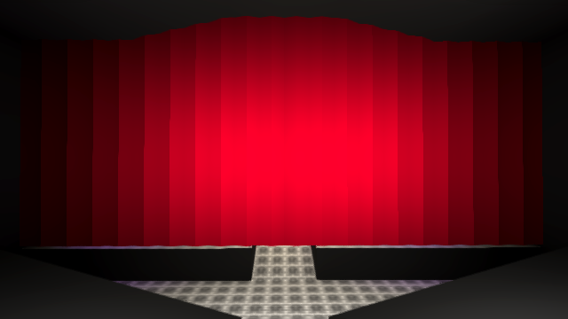

Compensation VR 1.5.0
This one's a doozy! Performance, Oculus, and more!
Major Updates
- We've done a ton of backend work on Creation Tools, and we're showing them off in a demo on August 20th! Find out more here: Creation Tools Demo - August 20
- We've been optimizing for over a month, meaning even Quest 1 users can now enjoy that sweet, sweet, 72hz refresh rate. PC users and Quest 2 users will also see substantial performance improvements. (we hope ;)
- We're releasing on Oculus App Lab! You can get the game here, and it will be available to install on August 19th!
-
We've released our first non-CVRO game! It's a custom room (still made in unity sadly),
Raven /Amphitheater
Minor Updates
- Quest 1 & Quest 2 users may now notice they can close their watch with the X and B. This was already intended behaviour, but a non-PC bug meant only PCVR users could use it.
-
Users with the
Kick Players room permission can now force users to leave a room. We'll be handing this permission out to some trusted moderators for use in the Lounge and Airsoft, and see where things go from there.
Regressions
-
Due to performance issues concerning multi-layered transparent materials, we've been forced to remove the fireplace
from
CVR /Lounge - The Photo Camera doesn't function on Quest platforms. We are working to resolve this issue as fast as we can, but we weren't able to resolve it in time for this update. We're aiming to have it fixed by 1.5.1.
- Loss of backwards compatability - due to very large upcoming & ongoing changes in CVR backing code, we've been forced to stop supporting old versions of the game. However, we will provide any support you need if you decide to run a private server on an older version or otherwise mod in a non-malicious fashion.
Bug Fixes
- Improved error handling when logging in & connecting to the CVR servers.
- Fixed a few places where you could get disconnected from Photon and fail to reconnect.